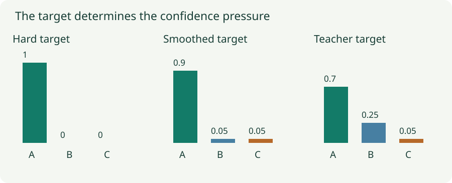

Label Smoothing and Distillation: Change the Target Distribution
Derive soft-target gradients, compare confidence penalties, and understand temperature-scaled teacher targets.
A classifier learns from a target distribution, not necessarily from a single hard label. Label smoothing spreads a little mass away from the labeled class. Distillation uses a teacher’s distribution to express which alternatives are plausible. Both change the gradient, but the information they supply is different.
1. The useful starting point is the cross-entropy gradient
Let $z_k$ be a logit, $p_k=e^{z_k}/\sum_j e^{z_j}$ its softmax probability, and $q_k$ the target probability. Targets sum to one. Rewriting cross-entropy as $L=-\sum_k q_kz_k+\log\sum_j e^{z_j}$ gives
A negative gradient raises that logit under gradient descent; a positive gradient lowers it. With hard target $(1,0,0)$ and prediction $(0.8,0.15,0.05)$, the gradient is $(-0.2,0.15,0.05)$. The correct-class logit is pushed upward even though the prediction is already correct. Classification accuracy alone does not tell us whether the loss has stopped asking for more confidence.
2. Label smoothing specifies a softer destination
With $K$ classes and uniform smoothing strength $\varepsilon$, define
The correct-class probability is $1-\varepsilon+\varepsilon/K$, and each other class gets $\varepsilon/K$. Some conventions distribute smoothing only over the incorrect classes; those give different numerical targets. State the convention before comparing strengths.
For three classes, true class A, and $\varepsilon=0.15$, the target is $(0.9,0.05,0.05)$. At prediction $(0.8,0.15,0.05)$, the gradient becomes $(-0.1,0.1,0)$. At $(0.98,0.01,0.01)$, the correct-class gradient is now positive: the loss asks the model to reduce excessive confidence relative to its soft target.
For one unconstrained example, cross-entropy is minimized at $p=q$. If both incorrect classes have the same logit, the desired correct-versus-incorrect logit gap is $\log(0.9/0.05)=\log18\approx2.89$. A hard target has no finite optimum logit gap in that idealized setting. This explains how smoothing changes the confidence pressure without claiming that every shared-parameter network can reach every target exactly.

3. Smoothing and a confidence penalty use different KL directions
The smoothed loss decomposes as $(1-\varepsilon)\operatorname{CE}(y,p)+\varepsilon\operatorname{CE}(u,p)$. Because $u$ is fixed, $\operatorname{CE}(u,p)$ differs from $\operatorname{KL}(u\|p)$ only by the constant entropy $H(u)$.
A confidence penalty instead adds $-\beta H(p)=\beta\sum_kp_k\log p_k$. Up to a constant, this is $\beta\operatorname{KL}(p\|u)$. The direction is reversed, so the objectives and gradients are different. In particular, $\operatorname{KL}(u\|p)$ strongly penalizes driving any class probability toward zero because $u$ assigns every class positive mass.
Neither construction guarantees calibrated probabilities on unseen data. They change training incentives; calibration must be measured on held-out examples. Smoothing also changes the meaning of the fitted target distribution, which matters when probabilities themselves are used downstream.
4. Distillation replaces a generic prior with teacher information
A teacher with logits $v$ produces temperature-scaled probabilities $q_k^{(T)}=\operatorname{softmax}(v/T)_k$. The student uses $p^{(T)}=\operatorname{softmax}(z/T)$. A larger positive temperature softens the distributions, making relative scores of non-top classes easier to observe.
For teacher logits $(3,2,-2)$, the teacher indicates that B is much closer to A than C is. Uniform smoothing cannot express that relationship because it assigns equal mass to all alternatives. Distillation can also transfer teacher errors or biases; a soft target is only as useful as the information it carries.
The teacher target is held fixed during the student update. Its entropy is constant with respect to student parameters, so using soft-target cross-entropy instead of this KL gives the same student gradient. The hard-label term and distillation term use their stated temperatures separately.
5. Why the conventional distillation factor is T squared
Differentiating the unscaled soft-target cross-entropy with respect to a student logit gives $(p_k^{(T)}-q_k^{(T)})/T$. One factor $1/T$ comes directly from dividing logits by temperature. At high temperature, a first-order expansion of softmax around a uniform distribution makes the probability difference itself approximately proportional to $1/T$, for fixed centered teacher and student logits.
The resulting gradient therefore shrinks approximately as $1/T^2$ in that regime. Multiplying the loss by $T^2$ counteracts this change of scale. It is a conventional approximate normalization, not an identity asserting that training is invariant to temperature. Temperature still changes the distribution of supervision across classes.
6. Lab: compare targets, probabilities, and logit gradients
One prediction, three classes
Student logits are $(z_A,0.5,-1)$; teacher logits are $(3,2,-2)$. In smoothing mode the temperature is 1. In teacher mode both distributions use the selected temperature and the displayed gradient includes $T^2$ scaling. The lab shows the soft-target term alone.
Increase the student’s A logit until its predicted mass exceeds the target. Watch the sign of the A gradient reverse. In teacher mode, raise temperature and inspect B and C: softening retains their relative ordering, even as the probabilities become closer together.
7. Combine soft targets deliberately
Mixup already supplies soft targets. Adding label smoothing mixes those targets with another distribution, changing the objective again. It may help, but it is not a free duplicate of the same operation. Class weighting also changes soft-target cross-entropy gradients; the simple $p-q$ formula assumes an ordinary normalized target with no additional class-dependent factors.
Use log-softmax for numerical stability, verify that target probabilities sum to one, and keep the teacher in the intended evaluation mode. If tuning temperature or smoothing using validation, preserve a separate final evaluation set. Report the actual target convention and loss weighting so the experiment can be reproduced.
Questions with answers
The construction here uses a deterministic soft distribution. Random label replacement can match an expected loss under a particular sampling scheme, but adds sampling noise and is a different implementation.
When its probability exceeds its soft target, $p_k-q_k$ is positive. Gradient descent lowers that logit.
No. Temperature is part of the training loss here. Standard student inference uses temperature 1 unless a separately validated calibration or deployment procedure specifies otherwise.
Sources
Szegedy et al., Rethinking the Inception Architecture; Hinton et al., Distilling the Knowledge in a Neural Network; Pereyra et al., Penalizing Confident Output Distributions.